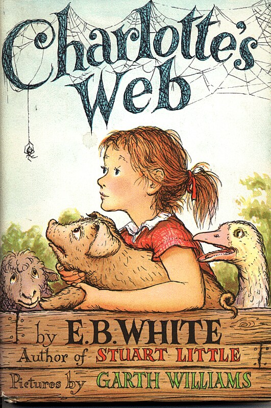
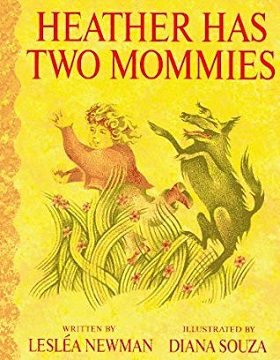
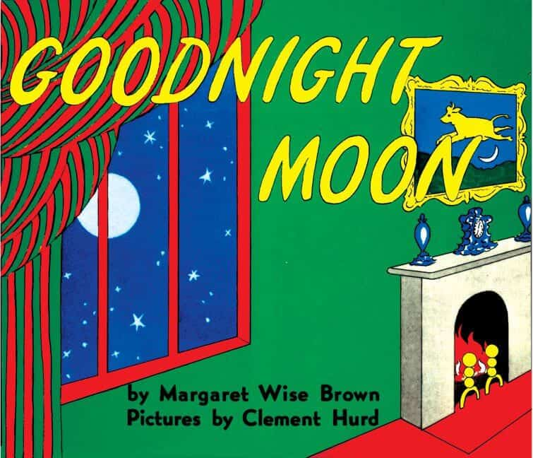

About
Classic Literature
Contemporary Literature
Children's Books
LGBTQ+ Themes
Race & Identity
Resources
Banned Children's Books
Even works now considered essential to world literature have faced censorship throughout history. These books challenged prevailing norms, addressed controversial topics, or used language deemed inappropriate for their time. Click on each book to read the full text on Project Gutenberg.



1. File:Huckleberry Finn book.JPG. (2020, October 31). Wikimedia Commons. Retrieved December 6, 2025, from https://commons.wikimedia.org/w/index.php?title=File:Huckleberry_Finn_book.JPG&oldid=508145153.
2. Category:where the wild things are. Wikimedia Commons. (n.d.). https://commons.wikimedia.org/wiki/Category:Where_the_Wild_Things_Are
3. Category:the giving tree. Wikimedia Commons. (n.d.-a). https://commons.wikimedia.org/wiki/Category:The_Giving_Tree
4. Charlotte’s Web. Wikimedia Commons. (n.d.-c). https://upload.wikimedia.org/wikipedia/en/f/fe/CharlotteWeb.png
5. Wikimedia Foundation. (2024, February 15). Talk:Heather has Two mommies. Wikipedia. https://en.wikipedia.org/wiki/Talk:Heather_Has_Two_Mommies
6. File:goodnight moon.JPG - Wikimedia Commons. (n.d.). https://commons.wikimedia.org/wiki/File:Goodnight_moon.JPG